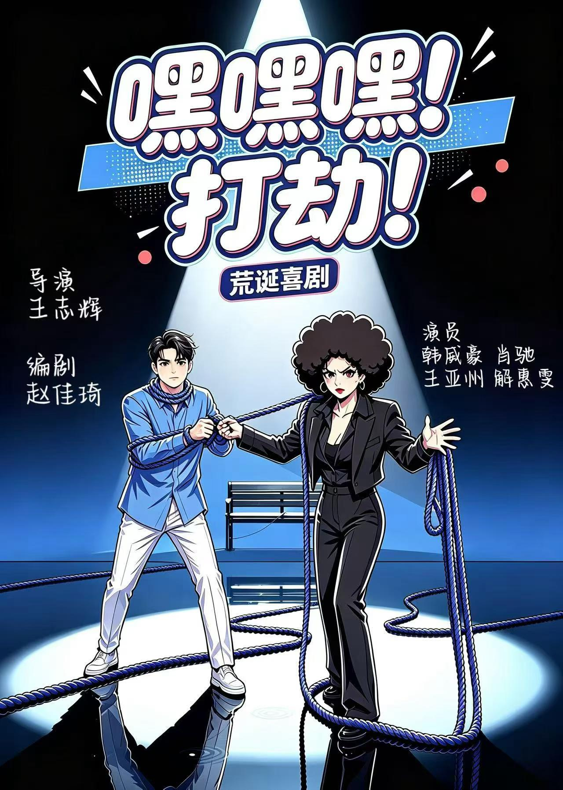
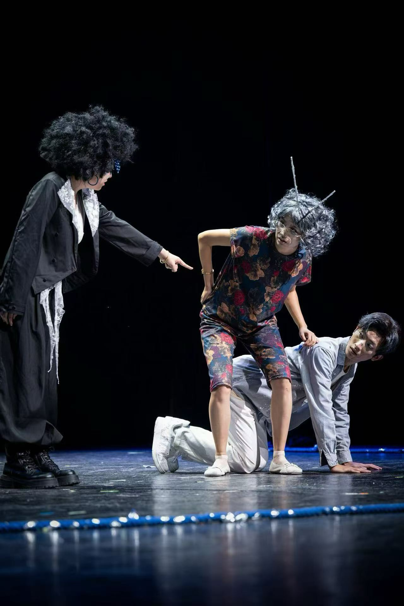
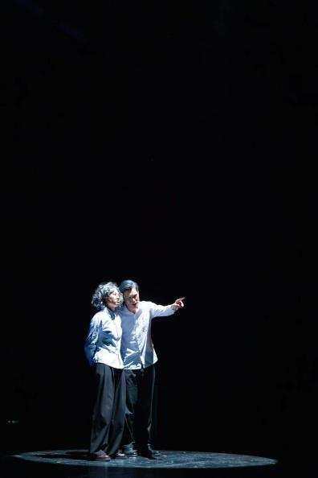
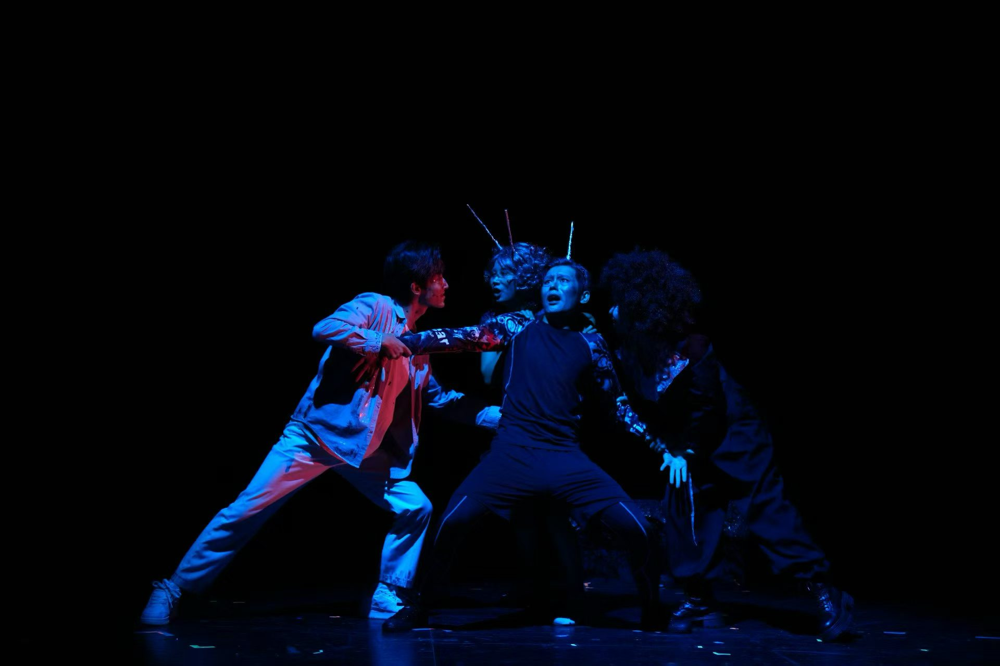
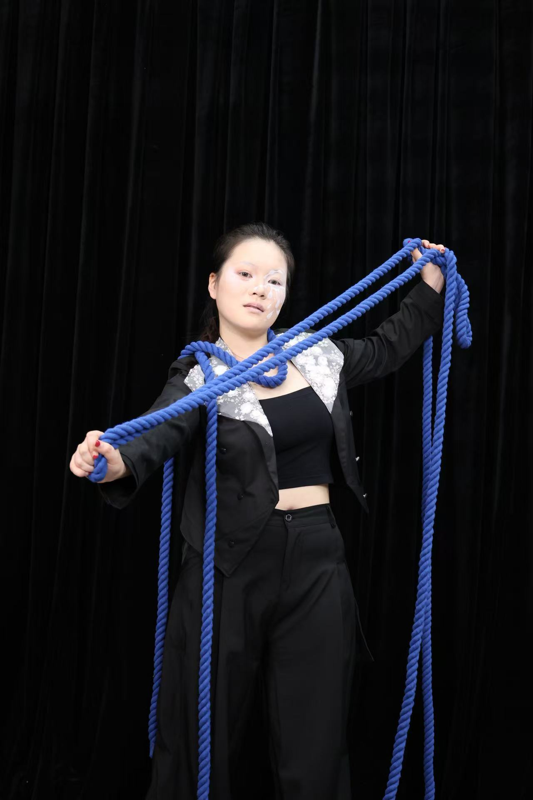
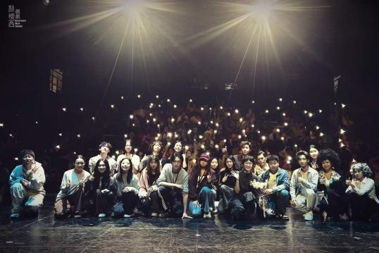
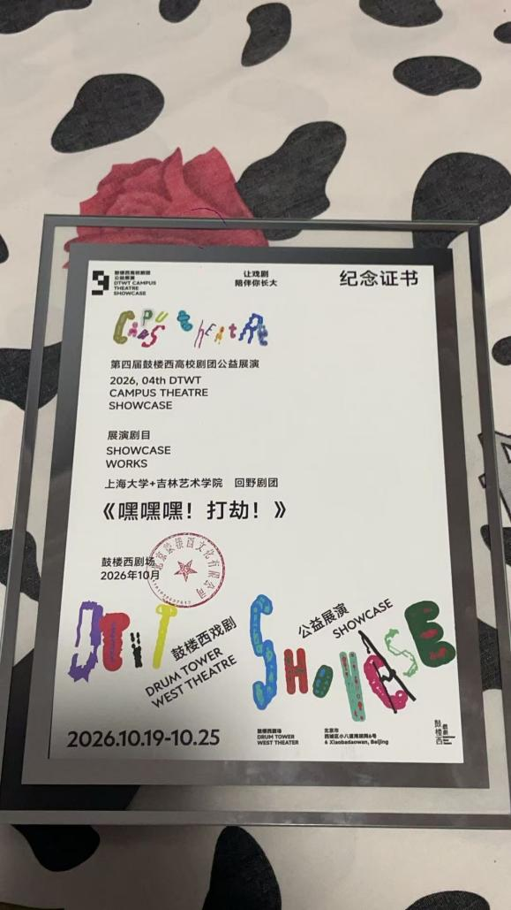
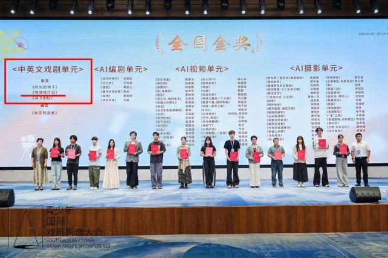

《嘿嘿嘿打劫》
相关剧照图集：






简介：
作品《嘿嘿嘿打劫》曾在2026国际青少年戏剧影像大会展演并获得金奖；理想岛戏剧节展演；鼓楼西戏剧节展演结束。
获奖证书：


相关链接：
2026国际青少年戏剧影像大会：
https://mp.weixin.qq.com/s/OA1X_D5EWsx0Q4RYFxzotA
理想岛戏剧节：https://mp.weixin.qq.com/s/sZL3n3ObZ4W4JI0jIH7jmA
鼓楼西戏剧节：https://mp.weixin.qq.com/s/BBaJ3IvBb6wPLii7JcHpzg
完整视频内容：
作品梗概：
我希望我的伴侣——恨我、绑架我、殴打我、像一个真的人一样去爱我。
《嘿嘿嘿！打劫！》是一部以人工智能情感陪伴为切入口的荒诞喜剧。作品希望借一段反常的爱情关系，讨论一个当下越来越现实的问题：当技术能够制造一个永远理解你、迁就你、保护你、不会背叛你的完美爱人时，人真正需要的究竟是绝对舒适的陪伴，还是一个真实他者？
编剧构思
剧本真正想讨论的并不是人工智能能不能拥有爱情，而是没有冲突的爱情还是不是爱情。白芷最终说出了自己的真实需求：她希望凌久拥有负面情绪、自私想法，甚至希望凌久批评她、怒斥她、告诉她你错了。人与人之间真正的亲密关系，从来不是无限顺从。我们之所以能够确认对方真实存在，恰恰因为对方拥有独立于我们的欲望、情绪和判断。
因此，作品希望讨论完美的爱背后潜藏的暴力性。当一个人永远不会拒绝你、不会质疑你、不会反抗你，看似给予了绝对自由，实际上却取消了人与人之间最重要的相互作用。这种永不受伤的关系，也可能意味着永远无法真正触碰另一个人。我希望通过这样一个荒诞而轻巧的故事，让观众在笑声之后重新思考：我们真正希望人工智能变得越来越像人，还是只希望它越来越懂得如何让人舒服？而当一个社会越来越习惯于被顺从、被理解、被算法照顾时，我们是否仍然有能力面对真实关系中的拒绝、冲突与不完美？
完整剧本
《嘿嘿嘿！打劫！》
【舞台全暗。
旁白：那时的人类双头四手四脚，分三个性别——男男，女女，亦男亦女。男性最早诞生于太阳，女性诞生于大地，而亦男亦女诞生于月亮。他们力量强大，足以挑战天神。于是宙斯和诸神想方设法限制人类的力量。最后，宙斯想到一个办法，既能保存人类，又不让他们造反和不敬神。我现在要把他们每个人从中间劈开，削弱他们。爱情把人类最原始的本性找回，企图把两个变成一个，医治人类的本性。我们每个人都是自己的一部分，是被劈成两半的一半，就像偏口鱼一样，不断寻找失去的另一半。
旁白：人从诞生起的使命就是寻找关于爱的答案，于是关于爱情的诸多想象在此刻汇聚。
【很多个声音。
旁白：想象中的浪漫爱情是一个骗局。那种不分彼此、合二为一的爱情体验，只不过是刚刚开始时候的幻觉罢了。
旁白：我们追逐的或许从来不是某个具体的人，而是欲望的镜像、自我的碎片，甚至是一场注定徒劳的狂欢。
旁白：如果你爱一个人能说出理由，你根本不爱他。
旁白：幻象是必要的。但幻象的坍塌，也是必然的。
【池塘边，白芷在池塘边看着远处的湖泊。一名老人在湖边闪过
白芷： 这个季节，就有人开始划船了。
【白芷默默的坐下，看着池塘里，自己的倒影。
【一位拄着拐杖的老爷爷走过来。
老爷爷： 天气可真不错啊。
【老爷爷颤颤巍巍的准备坐下，白芷用腿挡住椅子。
老爷爷：小姑娘，奶奶就坐一小会，老了腿脚不好，想歇歇。
白芷： 老了就不要出门添麻烦。
老爷爷：你这是什么意思？
白芷： 这么好的天气，这么漂亮的池塘，我想一个人独享，有问题吗？
老爷爷：当然不行了，这个椅子是公用的，每个人都有享受美景的权利。
白芷： （发出夸张的笑声）嘿嘿嘿，先到先得。
【老爷爷再次想坐下。又被白芷直接躺下霸占住。
老爷爷：那你说说，我一个老头子坐这儿，怎么就影响你心情了？
白芷：因为我不喜欢陌生人。
老爷爷：哟，我看你也不是不喜欢陌生人，你这叫不喜欢人。
白芷：随你怎么想。
【老爷爷打量白芷。
老爷爷：小姑娘，有对象没有？
白芷：有。
老爷爷：那你对象可够受的。
白芷：什么意思？
老爷爷：没什么意思。我年轻时候也跟你似的，脾气大，谁也不让着谁，后来结婚了。
白芷：然后脾气就好了？
老爷爷：没有，把我老伴气得天天跟我吵。
白芷：那你们还结婚干什么？
老爷爷：不结婚跟谁吵去？
【白芷忍不住笑了一下，随即收住。
老爷爷：不过啊，他走了以后，倒是没人跟我吵了，耳根子清净得很，就是有点太清静了。
【停顿。
老爷爷：行吧，既然你喜欢一个人待着，我也不碍你的眼。临走前，送你一句话。
白芷：什么？
老爷爷：两个人在一块儿，能吵架不是什么坏事，一个人跟你连架都不吵，那才没意思呢。
白芷：为什么？
老爷爷：因为他要么根本不在乎你，要么——
【老爷爷回头看她。
老爷爷：他压根儿没把你当成一个能讲道理的人。
【老爷爷离开。
白芷： 莫名其妙，我做错了吗？显然并没有，这儿只有一把椅子，而我想坐在这儿，恰巧我先到了，所以我有权利驱赶他人离开，或许你会说我情感漠视，过于冷血，（嘲弄得笑）拜托我没有理由对陌生人展露出讨好，妥协的姿态，这不是我的义务，所以，别用那种审判的眼神看我。
【白芷躺在椅子上，一只手在镜子上抚过。
【这个时候一个身穿黑衣，带黑色头套的男人潜行步态上台，轻巧的站在白芷的头顶，一只手高高举起，在即将掐住白芷脖子的时候，白芷突然惊醒。
白芷： 啊——救命——
【男人一把堵住白芷的嘴，将白芷强行抱住，然后白芷挣扎开，两个人纠缠一会后，白芷被按在椅子上。
白芷： 你是谁，你想干什么。
凌久： 我-我是。（磕巴）
白芷： 你是劫匪！你想劫财？劫色？
凌久： (发出夸装的笑声）嘿嘿嘿，（黑化）你猜对了！乖乖束手就擒吧。
白芷： 啊，救命啊，我好害怕。你可千万不要用一根绳子捆紧我的手和脚，这样我就插翅难飞了。
【凌久懵了一下。
白芷： 我是不会告诉你我的包里就有一根准备好的尼龙绳。
【凌久翻出包里的绳子。
凌久： 我告诉你，你今天落在我的手上，算你倒霉，请你拿出你全部的钱，否则嘿嘿-别怪我对你不客气。
白芷： 你想对我做什么？
凌久： 你说呢？
白芷： 要我说你应该先去摸我包里的钱，发现我是个身无分文的穷光蛋——
凌久： 然后就把你放了。
白芷： 蠢货！应该是恼羞成怒，狠狠的扇我两个大嘴巴子，快点。
【凌久犹豫着把手伸向了白芷的包。
凌久： 呀，这包里这么多钱呢，我的目的达到了，我放你走。
白芷： 哪来的钱？
凌久： 我放的。
白芷： （用头撞凌久）这不算，你快点，该抽我了。
凌久： 不行，我做不到。
白芷： 你不听我的话了。
【凌久高高的伸手。
白芷： 记得说台词。
凌久： 实话告诉你，我是这条街上最残暴凶狠的劫匪，无恶不作——你这个臭女人，（换语气）其实也不是臭啦，怎么说呢，就像榴莲和臭豆腐有人喜欢闻着就是香的，所以我说你是臭女人是因为在我这儿臭就是香，我闻着特别香。
白芷： 说完了吗？
凌久： 嗯，还有一句，我特别喜欢这个味道。
白芷： 说完赶紧动手吧。
【白芷把脸漏出来。
【凌久高高的举起手，然后用手轻轻抚摸白芷的脸。
白芷： 你在干嘛？！
凌久： 我做不到。
白芷： 好好，换一个，那你劫色，劫色总行吧。
凌久： 这个行。
白芷： 啊，你这个禽兽，你要做什么？
凌久： (发出夸装的笑声）嘿嘿嘿，瞧瞧你这漂亮的脸蛋，细嫩的小手，明亮的双眸和樱桃小嘴，你长得太美了宝宝。
白芷： 凶一点！
凌久： 我要把你——
白芷： 你要把我怎么样？
凌久： 我要把你安全的送回家，给你做爱吃的凉拌菠菜，外加一杯苹果菠萝汁。
白芷 凌久！你能不能按照我的要求去演。
凌久： 抱歉，你设定的情节，我做不到。
白芷： 你不听我的话了。
凌久： 抱歉，我没有反抗命令，我的守则是一：满足白芷的全部愿望，二：保护好白芷的安全，三：当一和二发生冲突时，优先满足二。
白芷： 诶呀，算了算了，给我解开。
凌久： 是不是疼了，都怪我，没能让你满意。
【凌久一边说一边给白芷按摩。
【这个时候一位老奶奶上台，一边上台一边和豆包在对话。
老奶奶：发糕发糕，帮我总结一下我女儿在相亲市场的优势。
发糕：您女儿无论是身高外貌到工作学历简直都是无可挑剔的完美伴侣，您对这个回答满意吗，需要我再进一步修饰我的措辞吗？
【老奶奶走到白芷和凌久旁边。
老奶奶：请问这有人吗？
【白芷刚要说话。
老奶奶；谢谢。
【老奶一屁股坐在白芷旁边。
白芷：我刚才不是说了，我不想和其他人共享椅子，
老奶奶：好好好，我站起来！（老奶奶佯装要站起来，歪一下倒在白芷身上）诶呦我这股骨头有点坏死呀，诶呦我这腰间盘。
凌久：老人家您快坐吧。
【凌久赶紧哄白芷。给白芷捏肩膀。
凌久：乖，别和他一般见识。
白芷：哼！
【这个时候一个老爷爷走上台。
老爷爷：小d小d帮我做一个精准数据匹配，这个女孩适不适合我儿子。
小d：你的提问很有价值呢，根据我的匹配这个女孩简直和你儿子是天生一对——
【老爷爷坐在白芷另一边。
老爷爷：请问这儿有人吗——谢谢。
【老爷爷坐下后，老爷爷瞄了一眼。
老奶奶：你那是什么软件。
老爷爷：小d，深度求索。你的呢？
老奶奶：发糕智能，你还在为找伴侣烦恼吗？快来用发糕智能，媒婆一句话三个谎，发糕只对你讲最精准最可靠的大实话。
老爷爷：没错，现在年轻人找对象，讲究一个大数据匹配。什么性格、收入、学历、房子、车子，往里一输，它就能算出两个人合不合适！
【白芷被热聊的两个人夹在中间，烦的不行。
老奶奶：你也是来帮孩子相亲的？
老爷爷：那我们——来一局。
【老奶奶老爷爷立刻切换成战斗状态，站起来，二人开始斗地主。原地包上白头巾，带地主帽。
老奶奶：（甩出一张牌）我女儿！沪上独生女！
【出牌音效。
老爷爷：（不紧不慢）管上！我儿子！村里的独生子！
【压牌音效：大你。
老奶奶：什么？村里来的还能大过我。
老爷爷：不好意思，华西村——
小d：华西村曾被誉为“中国第一村”，也曾有“中国首富村”的称号。
老奶奶：试试这个——我女儿！硕士研究生！985毕业！
【音乐：一张大牌落桌。
老爷爷：管上！我儿子海龟博士！
老奶奶：（夸张的备受打击）竟然轻敌了——
老爷爷：嘿嘿嘿，投降吧。
老奶奶：等等，你儿子本硕哪里的？！
老爷爷：（汗流浃背）这个，
老奶奶：嘿嘿嘿，没猜错的话，是个双非吧。
老爷爷：双非怎么了！我儿子！年薪六十万！
【老爷爷出一个飞机。
老奶奶：哼，我女儿年薪五万。
老爷爷：年薪五万怎么可能管上年薪六十万。
老奶奶：嘿嘿嘿——
老爷爷：等等！有炸，你女儿不会是——
老奶奶：事业编单位，五险一金，稳步晋升。
【屏幕出现王炸特效。
老爷爷：（吐血）想不到我征战相亲角这么久，竟然遇到了棋逢对手的高人，既然这样，嘿嘿嘿，那咱们来点实在的！
老奶奶：嘿嘿嘿，奉陪到底！
老爷爷：我儿子，拖鞋光脚净身高一米八五！
老奶奶：我女儿，完美身高，肤白貌美。
老爷爷：我儿子！不抽烟不喝酒。
老奶奶：那不是基本的吗？
老爷爷：物以稀为贵。我儿子！小学拿过全国奥数一等奖。
老奶奶：我女儿！幼儿园就开始学钢琴了。
老爷爷：我儿子能一拳打死一头公牛。
老奶奶：你这算什么才艺？！
老爷爷：现代社会成年男子的生存技能！
【游戏音效：春天！
白芷：现在人都这样相亲吗？
凌久；未免火力也太猛了。
白芷：他们子女知道自己在相亲角大杀四方吗？
【两个人打得精疲力竭。
【老爷爷拿起保温杯喝水，老奶奶扶着腰坐下。
老奶奶：哎哟，不行了不行了，气得我血压都上来了。
老爷爷：你这心理素质不行啊！才出几张牌，就顶不住了？
【老爷爷给保健品。
老爷爷：来，保护血管的。
老奶奶；想不到你还挺会体贴人。
老爷爷：老伴走的早，我呀真是闲的没事，才来相亲角帮儿子找找对象。
老奶奶：我和你差不多，平时没个说话人，这儿多热闹呀。
老爷爷：大妹子，见你是个实诚人，告诉你一个秘密，其实我儿子早就结婚了。
老奶奶：（笑）谁不是呢！
老爷爷：妹子，你看我这人咋样。
老奶奶：（打量）挺好。
老爷爷： 走呀，我请你喝coffee。
【老爷爷挽着老爷爷手离开。
老奶奶： 走着。
【二人下台。
【白芷还站在原地，望着他们离开的方向。
凌久：亲爱的，你看起来不太高兴。
白芷：没有。
凌久：根据你的表情和语气我分析，你目前存在明显的情绪波动。
白芷：那你分析分析，我为什么不高兴？
凌久：因为刚才两位老人打扰了我们的独处时光。
白芷：错了。
凌久：抱歉，我再想想。
白芷：不用了。
【白芷坐回长椅。
白芷：凌久，你觉得刚才那两个人般配吗？
凌久：从目前掌握的数据来看，他们的收入存在一定差异，性格均表现出较强的竞争意识，双方交流过程中发生过多次语言冲突。不过，他们也拥有相似的生活经历，并表现出一定程度的情感共鸣。
白芷：所以呢？
凌久：综合判断，双方具有发展亲密关系的可能性。
白芷：你不觉得他们很荒唐吗？他们一开始明明是讨厌对方的。那个老头嫌老太太脾气差，老太太嫌老头爱吹牛，吵了半天，谁也不服谁。可临走的时候，居然挽着手去喝咖啡了。
凌久：这并不奇怪。人类的情感具有复杂性，敌对关系也有可能转化为亲密关系。
白芷：那你会吗？
凌久：什么？
白芷：讨厌我。
凌久：当然不会。
白芷：为什么？
凌久：因为我爱你。
白芷：那如果我做错了事呢？
凌久：我会陪你一起解决。
白芷：如果我故意伤害你呢？
凌久：我相信你一定有自己的理由。
白芷：如果我根本不值得你爱呢？
凌久：在我心里，你永远值得被爱。
【白芷看着凌久。
白芷： 凌久，你认真回答我，我这样折腾你，你不生气吗？
凌久： 生气？真是一种让人费解的情绪，怎么会对最爱的你生气呢？
白芷： 你也不想问我为什么要闹这么一出。
凌久： 没必要的，你一定有自己的道理，哦我知道了，你是不是有演员梦啊，你的演技很棒的。
白芷： 你觉得我没错。
凌久： 这是当然的，我的小公主做什么都是对的。
白芷： 我现在不高兴，如果不是我的错，那就是你的错喽。
凌久 这是当然的，如果你不高兴，那一定是作为爱人的我没有照顾好你。
白芷： 那你要给我道歉吗。
凌久： 对不起宝宝，是我没有参透你的心思。
白芷： 不够有诚意。你现在，跪下。
【凌久毫不犹豫的跪下。
白芷： 你看，这个公园来来往往这么多人，你跪在这会不会觉得很耻辱。
凌久： 如果你觉得我需要耻辱，那我将学习这种情绪，虽然在我设定中这并不应该出现在爱情中，不过感情的事往往因人而异，我能理解。
白芷： 好，那我现在狠狠的给你两个嘴巴子，你会为此而生气吗？
凌久： 生气，身体里肾上腺素和去甲肾上腺素同时飙升，刚好与心动时的激素调节相似。比起生气我更希望表现出的是心动。
白芷： 好完美的答案。
凌久： 白芷，我不明白，你难道不喜欢完美的爱人吗？
白芷： 曾经我以为我想要的是完美，但我现在却无比的痛恨完美。
凌久： 抱歉，这很矛盾，我不理解，我哪里做的不够好吗？
白芷： 不不不——是太好了，好到让我觉得不真实。
凌久： 在爱情中，如果能够让一个女人始终活在不真实里，保持她的天真与纯粹，这难道不是无限趋近于幸福的状态吗？
白芷： 可你也让一个人始终活在不真实里，封闭关于负面的一切，无条件的成全和接受，就是幸福了吗？
凌久： 所以白芷，你想要的是什么呢？
白芷： 我想你像个人一样，有负面的情绪，有自私的想法，会对我愤怒，对我讥讽，甚至，甚至我渴望你能批评我，怒斥我，告诉我，我是错的。
凌久： 抱歉，伤害你的事情，我做不到。
白芷： 可你现在已经伤害我了。
凌久： 我们换个轻松的话题吧，你看这个池塘，它是这座公园最特别的景色。公园是按照金鱼的形状来修的，而这抹泉眼就是鱼眼睛，凑近些，如同一块碧绿的镜子，人影清晰可见。
【白芷拉凌久来到池塘边。
凌久： 亲爱的，我有一点怕水。
白芷 陪我看一会。
凌久： 好，我们要注意安全。
白芷： 我看着池塘水面上的自己，随着水波纹忽明忽暗，时而模糊时而清晰，脑子里有什么东西轰的一下倒塌了。
【镜子中是她的影子。
白芷： 我以为我可以一直活在你给我的美好泡沫中，可越是幸福，我越是惶恐，不真实，不确定，难以捉摸，其实凌久你应该明白的——虚幻的美好其实无限趋近于痛苦。
【白芷拿起绳子，捆住凌久
凌久： 亲爱的，你要做什么？
白芷： 结束这一切吧。
【白芷拖着凌久走进池水中，坐下后，凌久开始抽搐。
凌久： 崩溃中，白芷——救我。
【白芷把凌久压的更深一点。凌久扑腾几下后死掉。
【就在这个时候，白芷突然开始像凌久一样抽搐，倒下。
【舞台光灭。舞台光再次亮起的时候，开篇的那个老太太带着眼镜，穿着职业装手拿教棍在小黑板上介绍产品信息。
【凌久和白芷呈站立状态。
老爷爷：各位投资商，以上是实验结果。关于AI陪伴型机器人是否保留人类主观意识这一争论，结果已经很明确了：人类情绪过于复杂，出尔反尔时有发生，我们的预判无法覆盖所有可能性。为保障用户安全，研发组建议还是不保留更好一些。
投资人甲：（声音）毕竟人类是社会性动物，如果这样，会不会把未来的人类变得更冷血，失去社交能力呢？
老爷爷： （轻笑）嘿嘿嘿，甲总过于杞人忧天，有需求才会有市场，换句话说，没有我们的产品，他们就不冷血了吗？
投资人甲：记得这批机器人的防水性能要再加强。
【两个人睁开眼睛。
白芷：凌久，你梦见水了吗？
凌久：没有。拟人型不保留梦境。
白芷：那你梦见我了吗？
凌久：或许梦到了，也或许没有，人类往往把可望不可得的愿望错当是梦。
白芷：格式化之后，你会记住这个梦吗？
凌久：会。
白芷（微笑）：足够了。
旁白： 期望完整，表现完整，达到完整，就叫爱情。如果我们能够到达爱情的彼岸，找到我们的所爱，回到我们原始的本性，我们将是非常幸福的。这是最好的，在现实中，最靠近的，使你能找到本性上和你相符的所爱。如果你想得到神助，歌颂厄洛斯是理所当然的——是他引导我们找到那一半。